Slide 9 หน้า 1–16 — Full data analysis with auto.arima() and ETS() · คลิป Class 9-2 (0:31–1:17)
Lesson 7–9 เลือก p, d, q, P, D, Q ด้วยการดูกราฟและตาราง AIC ซึ่งอาจารย์เรียกว่า "subjective approach" ของสมัยก่อน บทนี้คือวิธีที่ใช้จริงและเป็นแนวของข้อสอบภาคปฏิบัติ
| หัวข้อ | เนื้อหา | สไลด์ |
|---|---|---|
| 1 | auto.arima ทำงานอย่างไร และเจ็ดขั้นของการวิเคราะห์ | 1–3 |
| 2 | German inflation ด้วย auto.arima | 4, 6–7 |
| 3 | ETS กับ ARIMA: ความเทียบเท่าและข้อห้าม | 5, 8–10 |
| 4 | เทียบโมเดลด้วย tsCV | 11–12 |
| 5 | Singapore: ARIMA with drift, ETS(M,Ad,N) และ differencing | 13–16 |
| 6 | แบบฝึกห้าแบบ | — |
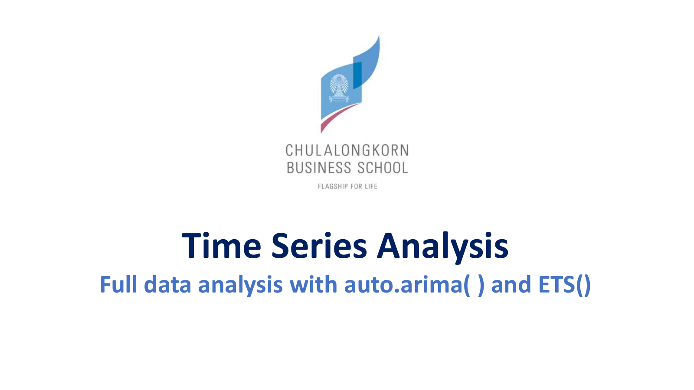
อาจารย์เล่าที่มา: "Power Point นี่ผมทำมานานแล้ว ... สมัยก่อนยังไม่มีคำสั่ง auto.arima" วิชาเดิมจบที่ Box-Jenkins แต่เทอมนี้จะมี frequency domain และ ARCH/GARCH ด้วย (Class 9-2, 0:31:12–0:32:42) บทนี้คือเครื่องมือที่ "ช่วยชีวิต" จากการลองผิดลองถูก
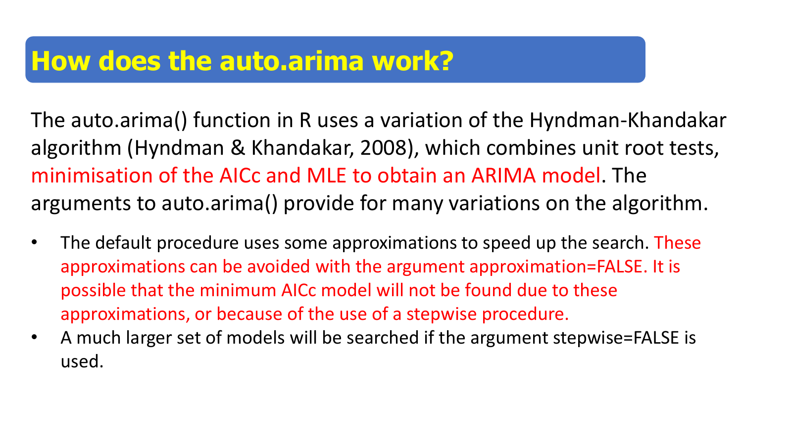
auto.arima ใช้ algorithm ของ Hyndman และ Khandakar (2008) รวมสามอย่าง: unit root test เพื่อเลือก d และ D, การหา AICc ต่ำสุดเพื่อเลือก p, q, P, Q และ MLE เพื่อประมาณพารามิเตอร์ AICc คือ AIC ที่ปรับสำหรับข้อมูลน้อย "แม่นยำมากกว่า AIC" (Class 9-2, 0:35:26)
\(\mathrm{AICc}=\mathrm{AIC}+\dfrac{2k(k+1)}{n-k-1}\)
ตัวอย่าง german ในหัวข้อ 2: AIC = −2.77, k = 5 (φ, θ₁, θ₂, Θ₁ และ σ²), n = 118 − 12 = 106 หลัง seasonal difference จะได้ \(2(5)(6)/(106-6)=0.6\) และ AICc = −2.17 ตรงกับ output เมื่อ n ใหญ่ ส่วนเพิ่มเข้าใกล้ศูนย์ AICc จึงเท่ากับ AIC ค่าเริ่มต้นใช้การประมาณเพื่อให้เร็ว อาจไม่เจอ AICc ต่ำสุดจริง ถ้าต้องการค้นละเอียดให้ใส่ approximation = FALSE และ stepwise = FALSE
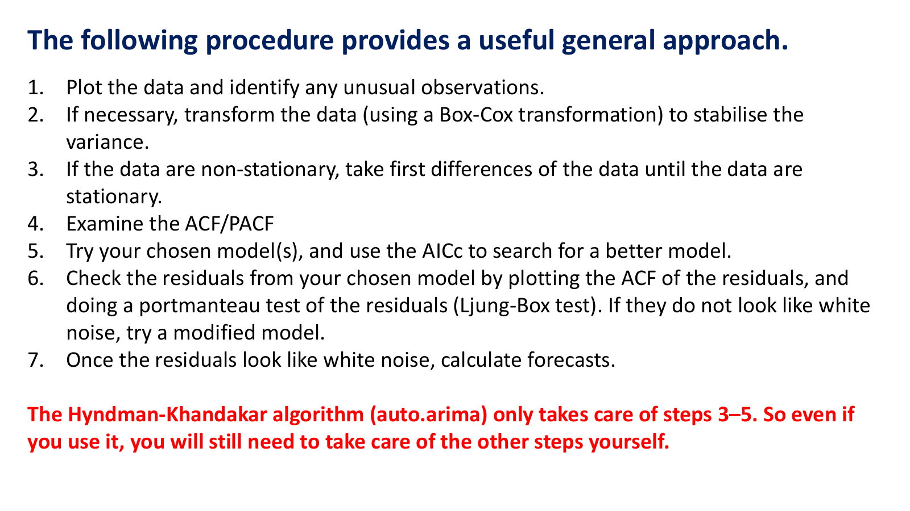
เจ็ดขั้น (Class 9-2, 0:36:27–0:37:40): (1) plot และหาค่าผิดปกติ (2) ถ้า variance ไม่คงที่ให้ log หรือ Box-Cox "auto.arima ไม่ transform ให้นะครับ" (3) difference จนนิ่ง (4) ดู ACF/PACF (5) ลองโมเดลด้วย AICc (6) ตรวจ residual ด้วย ACF และ portmanteau test "auto.arima ไม่ได้ตรวจสอบ residual ให้" (7) พยากรณ์ The Hyndman-Khandakar algorithm (auto.arima) only takes care of steps 3–5. "นิสิตไม่ต้องมานั่งดูกราฟ ACF PACF ไม่จำเป็นต้องดู AIC BIC ... auto.arima แนะนำได้ว่า d เล็กคืออะไร D ใหญ่คือเท่าไร" (Class 9-2, 0:36:55)
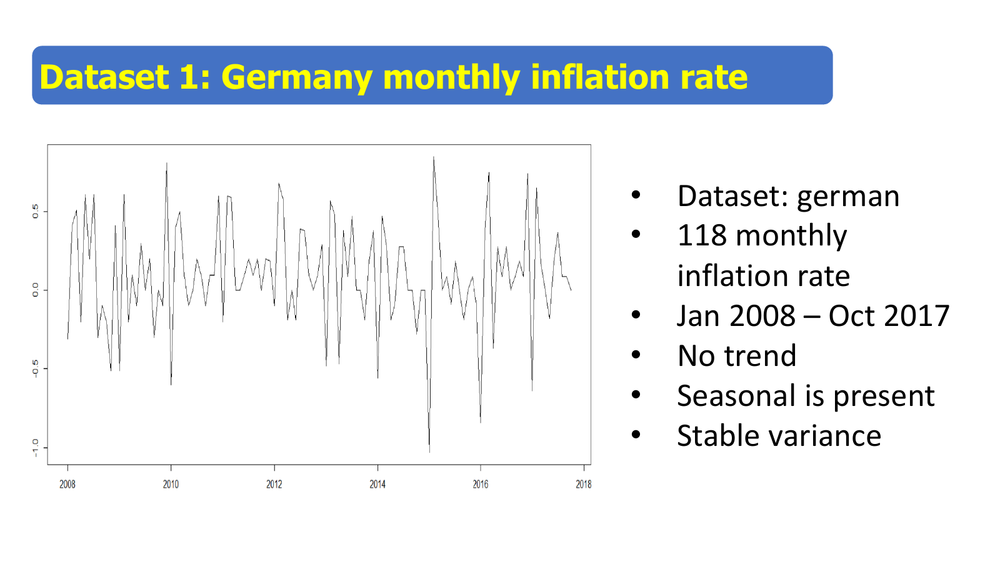
german: อัตราเงินเฟ้อรายเดือนของเยอรมนี มกราคม 2008 ถึงตุลาคม 2017 รวม 118 ค่า ไม่มี trend มี seasonal และ variance คงที่ (Class 9-2, 0:38:22) ข้อมูลชุดเดียวกับ Lesson 4 ซึ่ง ETS ได้ ETS(A,N,A) ต้องสร้างด้วย ts(data, start = 2008, frequency = 12) เพื่อให้ R รู้ว่า s = 12
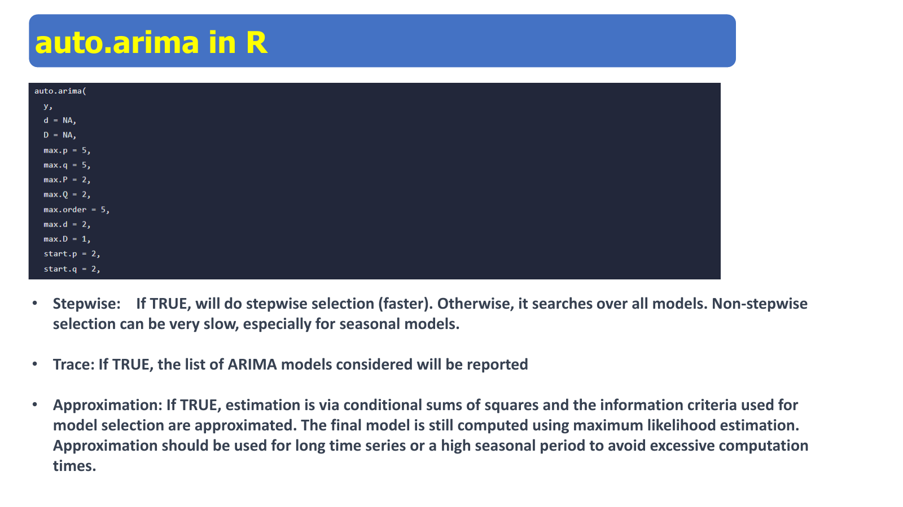
สไลด์หน้านี้อธิบายอาร์กิวเมนต์สามตัวที่ใช้ทุกครั้ง ตารางข้างล่างสรุปความหมายพร้อมคำอธิบายของอาจารย์
| อาร์กิวเมนต์ | ทำอะไร (Class 9-2, 0:42:21–0:45:34) |
|---|---|
| stepwise = TRUE | ค้นแบบเพิ่ม/ลดอันดับทีละขั้นจากโมเดลปัจจุบัน เร็วกว่า เทียบกับ stepwise variable selection ในวิชา regression ถ้า FALSE ลองทุกโมเดล ใช้เวลานาน โดยเฉพาะ seasonal |
| trace = TRUE | แสดงทุกโมเดลที่ลองพร้อม AICc ลองราว 20–30 โมเดล "ไม่ได้จำเป็นขนาดนั้น แต่อยากให้นิสิตเรียนรู้" |
| approximation = FALSE | ถ้า TRUE ใช้ conditional sum of squares และ AICc แบบประมาณระหว่างค้น (โมเดลสุดท้ายยังใช้ MLE) เหมาะกับข้อมูลยาว 1000–3000 จุด german สั้นจึงตั้ง FALSE |
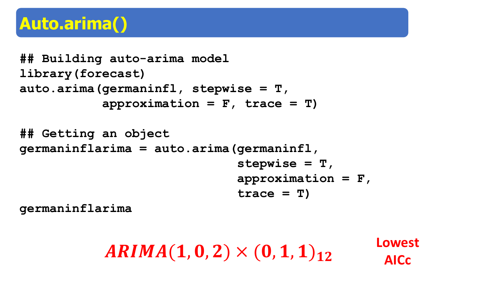
trace แต่ละบรรทัดเขียน ARIMA(p,d,q)(P,D,Q)[12] ตามด้วย AICc "วงเล็บแรกคือ non-seasonal part วงเล็บหลังคือ seasonal part" (Class 9-2, 0:47:45) บรรทัดที่เป็น Inf คือโมเดลที่ฟิตไม่ได้ เช่น ไม่นิ่ง เมื่อรันจริงได้ ARIMA(1,0,2)(0,1,1)[12] with drift ที่ AICc 0.049 ก่อน แล้วลองตัด drift ได้ −2.166 ต่ำกว่า จึงเลือก ARIMA(1,0,2)(0,1,1)[12]
Coefficients:
ar1 ma1 ma2 sma1
-0.7947 0.7786 0.2115 -0.7618
s.e. 0.1201 0.1469 0.1013 0.1291
sigma^2 = 0.04883: log likelihood = 6.38
AIC=-2.77 AICc=-2.17 BIC=10.55
p = 1, d = 0, q = 2, P = 0, D = 1, Q = 1, s = 12 ไม่มี intercept เพราะ D = 1
\(1-\phi_1B=1-(-0.7947)B=1+0.7947B\)
\(1+0.7786B+0.2115B^2\) และ \(1-0.7618B^{12}\)
\((1+0.7947B)(1-B^{12})X_t=(1+0.7786B+0.2115B^2)(1-0.7618B^{12})w_t\), \(\hat\sigma=\sqrt{0.04883}=0.221\)
arima(germaninfl, order = c(1,0,2), seasonal = list(order = c(0,1,1), period = 12))diagnostic ด้วย histogram, QQ plot และ tsdiag ผ่านหมด (Class 9-2, 0:53:28) แล้วอาจารย์แนะนำ checkresiduals() ของ package forecast ซึ่ง "ไม่เคยสอนมาก่อน" (0:54:25): รวม Ljung-Box ทุก lag เป็นค่าเดียว เรียกว่า portmanteau test "สมัยก่อนทำ Ljung-Box แยกตาม lag หลัง ๆ เริ่มรวมกัน"
Ljung-Box test data: Residuals from ARIMA(1,0,2)(0,1,1)[12] Q* = 15.035, df = 20, p-value = 0.7744 Model df: 4. Total lags used: 24
อ่านผล: ใช้ lag 1–24 (สองรอบ seasonal) หัก df ด้วยจำนวนพารามิเตอร์ 4 ได้ df = 20 และ p = 0.7744 > 0.05 จึงไม่ reject H0 โมเดลเหมาะสม (Class 9-2, 0:55:20) พยากรณ์ด้วย forecast(germaninflarima) ได้พฤศจิกายน 2017 = 0.0805, ธันวาคม 0.3241, มกราคม 2018 = −0.6207 ช่วง 80% ของพฤศจิกายนคือ −0.203 ถึง 0.364 และ 95% คือ −0.353 ถึง 0.514 อาจารย์ใช้ point forecast เป็นหลัก "ผมไม่ค่อยสนใจช่วงความเชื่อมั่น" (0:58:11) ในคลิปอาจารย์พูดว่าแถบเป็น "85 หรือ 90" แต่ค่าเริ่มต้นของ forecast() คือ 80% และ 95%
สไลด์เริ่มด้วยการแก้ความเชื่อผิด: It is a commonly held myth that ARIMA models are more general than exponential smoothing. ความจริงคือสองตระกูลซ้อนกันบางส่วน ETS แบบ linear บางตัวเทียบเท่า ARIMA บางตัว ARIMA จำนวนมากไม่มีคู่ใน ETS และ ETS ทุกตัวไม่นิ่ง ขณะที่ ARIMA บางตัวนิ่ง ตาราง (R และ Hyndman ใช้ MA แบบบวก) อาจารย์วงสีแดงสองแถวแรก (Class 9-2, 0:40:50)
| ETS | ARIMA | พารามิเตอร์ |
|---|---|---|
| ETS(A,N,N) | ARIMA(0,1,1) | θ₁ = α − 1 |
| ETS(A,A,N) | ARIMA(0,2,2) | θ₁ = α + β − 2, θ₂ = 1 − α |
| ETS(A,A_d,N) | ARIMA(1,1,2) | φ₁ = φ, θ₁ = α + φβ − 1 − φ, θ₂ = (1 − α)φ |
| ETS(A,N,A) | ARIMA(0,1,m)(0,1,0)ₘ | |
| ETS(A,A,A) | ARIMA(0,1,m+1)(0,1,0)ₘ | |
| ETS(A,A_d,A) | ARIMA(0,1,m+1)(0,1,0)ₘ |
แถวแรกคือผลเดียวกับ Lesson 7: α = 1 + θ ถ้า θ = −0.6 จะได้ α = 0.4 ถ้าโจทย์ใช้ MA แบบลบ \(w_t-\theta w_{t-1}\) จะเป็น α = 1 − θ แถวสองคือ Holt ตัวอย่าง α = 0.8, β = 0.1 ได้ θ₁ = 0.8 + 0.1 − 2 = −1.1 และ θ₂ = 1 − 0.8 = 0.2 ETS แบบ multiplicative (เช่น M,A,M ของ Xbox) ไม่มีคู่ใน ARIMA
α = 0.7851, β = 0.0001 ตารางบอกว่าเทียบเท่า ARIMA(0,2,2) ที่ θ₁ = −1.2148, θ₂ = 0.2149
ได้ θ₁ = −1.0637, θ₂ = 0.0637 ไม่ตรงกับข้อ 1
ทั้งสองชุดแยกตัวประกอบได้ (1 − B)(1 − cB): \(1-1.2148B+0.2149B^2\approx(1-B)(1-0.2149B)\) และ \(1-1.0637B+0.0637B^2=(1-B)(1-0.0637B)\) มีราก MA = 1 พอดี (β ≈ 0 ทำให้เกิดเหตุนี้) ตัวประมาณอยู่บนขอบ invertible ผลจึงไวต่อวิธีประมาณ ETS ใช้ likelihood ของ state space ส่วน arima ใช้ ARIMA likelihood
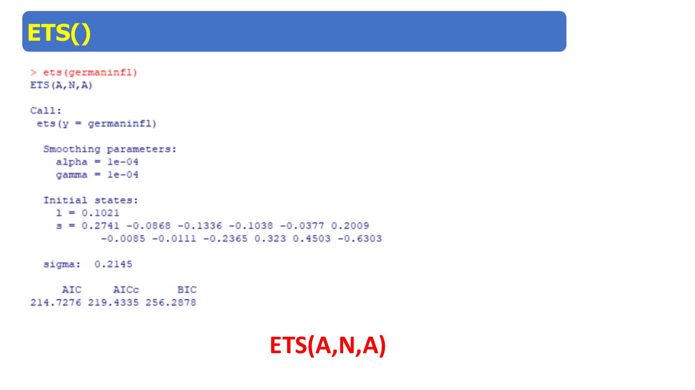
ETS เลือก ETS(A,N,A) α = 0.0001, γ = 0.0001, σ = 0.2145, AIC = 214.73, AICc = 219.43 (Class 9-2, 1:00:45) ตามตารางเทียบได้กับ ARIMA(0,1,12)(0,1,0)₁₂ ซึ่งต่างจากที่ auto.arima เลือก α และ γ ที่เกือบเป็นศูนย์แปลว่า level และรูปแบบฤดูกาลแทบไม่เปลี่ยนตลอด 10 ปี ค่าพยากรณ์ พฤศจิกายน 2017 – มกราคม 2018 = 0.015, 0.376, −0.528 "คล้าย ๆ กับ ARIMA" (Class 9-2, 1:01:45)
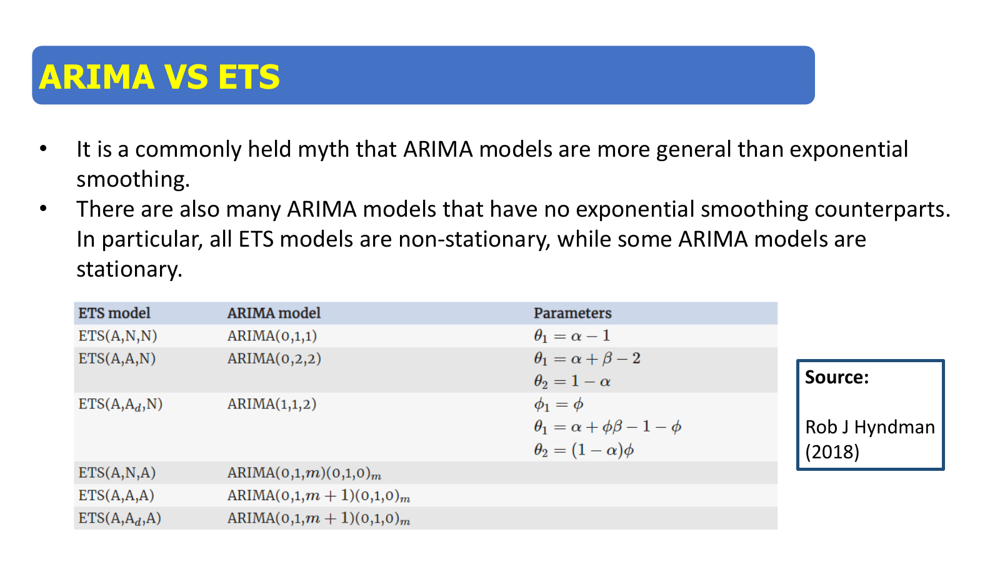
หน้านี้ซ้ำกับหน้า 5 ใช้ทวนก่อนเข้าเรื่องการเทียบ ประเด็นที่ต้องจำ: ETS(A,N,N) ↔ ARIMA(0,1,1) และ ETS(A,A,N) ↔ ARIMA(0,2,2) "D เล็กเป็น 2 ... ลองไปศึกษาดู" (Class 9-2, 0:41:15)
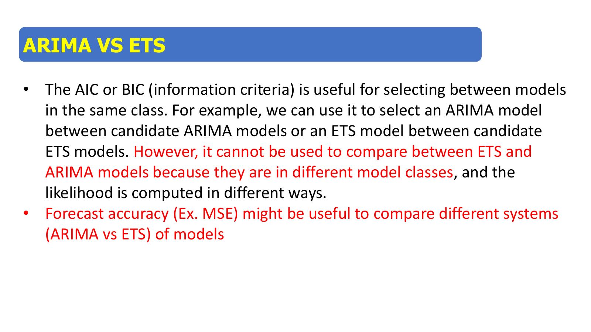
AIC/BIC ใช้เลือก ARIMA จากหลาย ARIMA หรือ ETS จากหลาย ETS แต่ cannot be used to compare between ETS and ARIMA models เพราะต่างตระกูลและ likelihood คำนวณต่างกัน ตัวอย่าง: german ได้ ETS AIC = 214.73 และ ARIMA AIC = −2.77 ตัวเลขต่างกันมากแต่ไม่ได้แปลว่า ARIMA ดีกว่า 217 หน่วย ARIMA ใช้ likelihood ของข้อมูลหลัง seasonal difference (106 ค่า) ส่วน ETS ใช้ข้อมูลเดิม 118 ค่า เหมือนการเทียบคะแนนสอบสองวิชาที่เต็มไม่เท่ากัน ต้องใช้ Forecast accuracy (Ex. MSE) แทน เหตุผลเดียวกันใช้กับ ARIMA ที่ d ต่างกัน (Lesson 9 หัวข้อ 8)
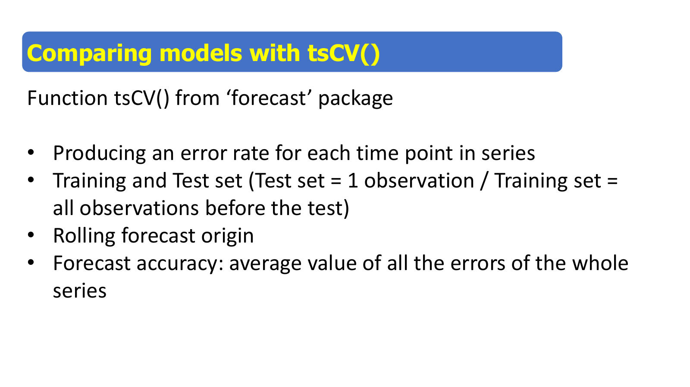
tsCV สร้าง error ทุกจุดเวลา: training set คือข้อมูลทั้งหมดก่อนจุดทดสอบ test set คือหนึ่งค่าถัดไป แล้วเลื่อนจุดเริ่มพยากรณ์ไปเรื่อย ๆ (rolling forecast origin) ความแม่นยำคือค่าเฉลี่ยของ error ทั้งอนุกรม อาจารย์เรียกว่า "leave one out cross validation" และวาดอธิบาย (Class 9-2, 1:02:06–1:05:48): รอบหนึ่งใช้ n − 1 จุดพยากรณ์จุดสุดท้าย รอบสองใช้ n − 2 จุดพยากรณ์จุดถัดไป และฟิตโมเดลใหม่ทุกรอบ จึงรันนาน 5–10 นาที
คำว่า leave-one-out ใน cross-sectional หมายถึงตัดจุดใดก็ได้ออก แต่ tsCV ใช้เฉพาะอดีตพยากรณ์อนาคต ซึ่งถูกต้องสำหรับอนุกรมเวลา เพราะในงานจริงไม่มีข้อมูลอนาคตให้ใช้ ตัวอย่าง n = 5 กับ h = 1: ใช้ {1} พยากรณ์ 2, {1, 2} พยากรณ์ 3, {1, 2, 3} พยากรณ์ 4, {1, …, 4} พยากรณ์ 5 ได้ error สี่ค่า (จุดแรกไม่มี error ใน R จะเป็น NA ด้วยเหตุนี้จึงต้องใส่ na.rm = TRUE)
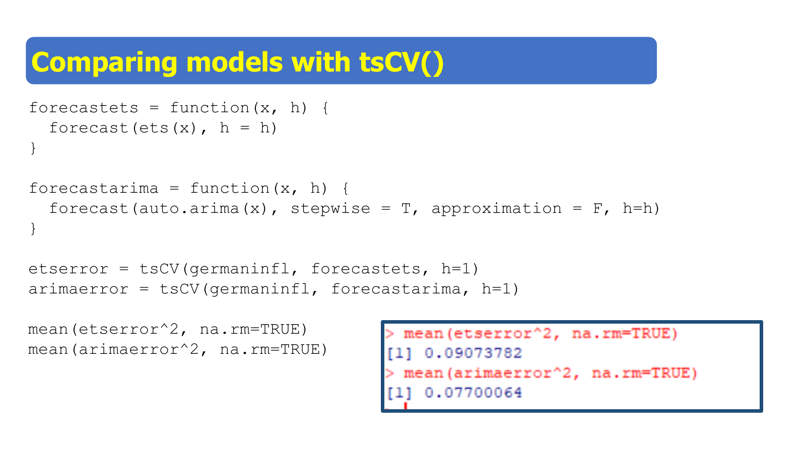
โค้ดสร้างฟังก์ชันพยากรณ์สองตัวแล้วส่งให้ tsCV ผลที่วงไว้บนสไลด์คือ MSE ของสองตระกูล ความหมายของแต่ละบรรทัดอยู่ในตาราง
| โค้ด | ทำอะไร |
|---|---|
| forecastets = function(x, h) forecast(ets(x), h = h) | ฟังก์ชันที่รับข้อมูลช่วง training แล้วคืนค่าพยากรณ์ tsCV จะเรียกซ้ำทุกจุด |
| forecastarima = function(x, h) forecast(auto.arima(x), stepwise = T, approximation = F, h = h) | เหมือนกันแต่เลือก ARIMA ใหม่ทุกครั้ง (ในโค้ดของสไลด์ stepwise, approximation ถูกส่งให้ forecast ไม่ใช่ auto.arima จึงไม่มีผล) |
| tsCV(germaninfl, forecastets, h = 1) | error ของการพยากรณ์หนึ่งก้าวทุกจุด "leave one out ... h ต้องเป็น 1" (1:06:40) |
| mean(etserror^2, na.rm = TRUE) | MSE ข้าม NA |
ผลบนสไลด์ (Class 9-2, 1:08:28): MSE ETS = 0.09074 และ MSE ARIMA = 0.07700 ARIMA ต่ำกว่าราว 15% จึงชนะ (รันซ้ำด้วย forecast เวอร์ชันปัจจุบันได้ ETS 0.0863 และ ARIMA 0.0770 ข้อสรุปเหมือนเดิม) "model ไหนมี mean square error ต่ำ model นั้นดี" RMSE คือ √0.077 = 0.278 เทียบกับ σ̂ = 0.221 ของโมเดลที่ฟิตกับข้อมูลทั้งหมด error นอกตัวอย่างจึงใหญ่กว่าในตัวอย่าง ซึ่งเป็นปกติ
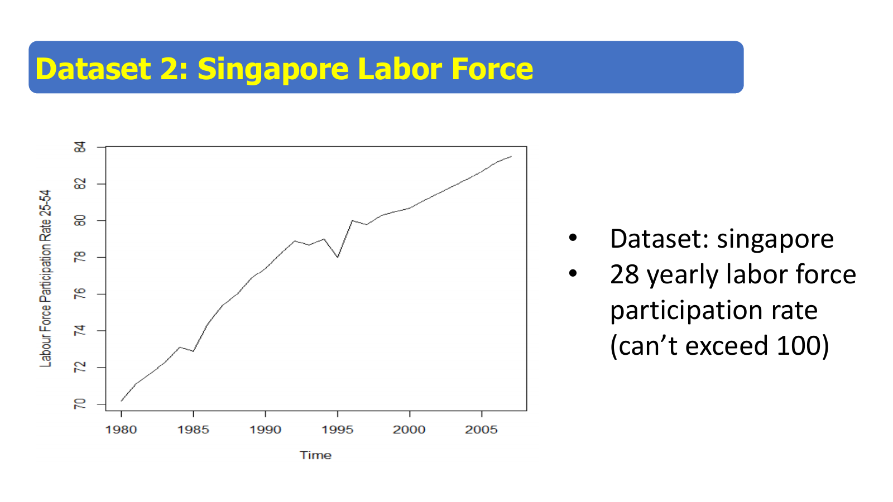
อัตราการมีส่วนร่วมในกำลังแรงงานอายุ 25–54 ปีรายปี 1980–2007 รวม 28 ค่า ขึ้นจากราว 70 เป็น 83.5 และเกิน 100 ไม่ได้ ข้อมูลรายปีไม่มี seasonal และสั้นมาก "ไม่ยาวเลย" (Class 9-2, 1:08:56)
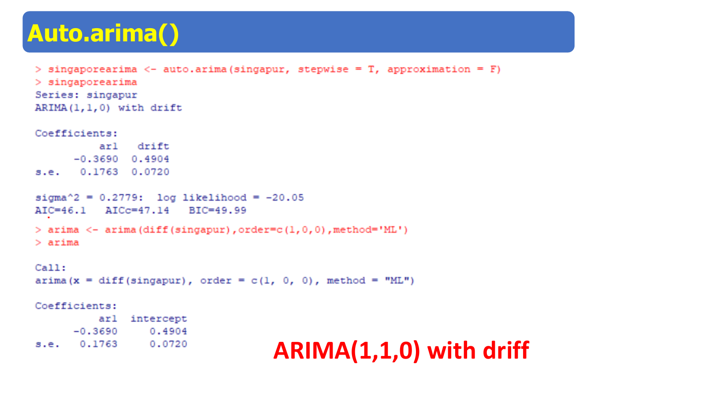
ar1 = −0.3690 (s.e. 0.1763), drift = 0.4904 (s.e. 0.0720), σ² = 0.2779, AIC = 46.1, AICc = 47.14 "drift คือ intercept" (Class 9-2, 1:09:47) ของผลต่าง เขียนได้ \(\nabla X_t-0.4904=-0.369(\nabla X_{t-1}-0.4904)+w_t\) คืออัตราเพิ่มเฉลี่ย 0.49 จุดต่อปี สไลด์แสดงว่าได้ค่าเดียวกับ arima(diff(singapur), order = c(1,0,0)) ที่มี intercept 0.4904 พยากรณ์ 2008–2010 = 84.06, 84.53, 85.03
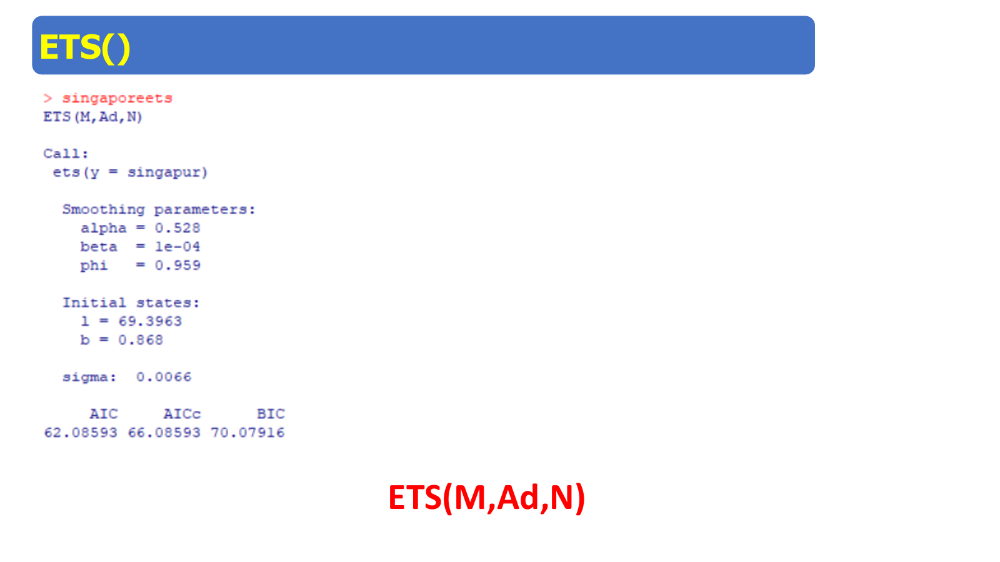
ETS(M,Ad,N): error คูณ trend บวกแบบ damped ไม่มี seasonal α = 0.528, β = 0.0001, φ = 0.959 (Lesson 4) "double exponential smoothing แบบ damped" (Class 9-2, 1:11:50) φ ทำให้ค่าพยากรณ์ค่อย ๆ โค้งเข้า เหมาะกับข้อมูลที่มีเพดาน 100
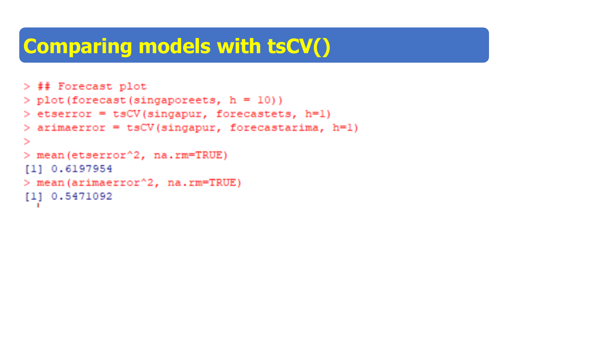
MSE ETS = 0.6198 และ MSE ARIMA = 0.5471 "ARIMA ชนะอีก" (Class 9-2, 1:13:20) ข้อมูลมีแค่ 28 ค่า ความต่างนี้จึงไม่แน่นอนนัก และ auto.arima กับ ets ในรอบแรก ๆ ของ tsCV ใช้ข้อมูลเพียงไม่กี่ค่า
ar1 = 0.2225 ไม่มี drift พยากรณ์ 83.57, 83.58, 83.58 เกือบราบ
ar1 = −0.369, intercept 0.4904 พยากรณ์ของผลต่าง 0.561, 0.465, 0.500 "ตรงนี้จะกลายเป็น 100" ถ้าไม่ undifference
diffinv(..., xi = singapur[28]) เริ่มจาก 83.5 ได้ 84.06, 84.53, 85.03 เท่ากับ auto.arima with drift
Arima(singapur, order = c(1,1,0), include.drift = TRUE) หรือ auto.arima อาจารย์สรุป "คุณใช้ข้างบนไปเถอะ" (1:17:16) คือใส่ d ในคำสั่ง แต่ต้องตรวจว่าต้องมี drift หรือไม่ไฟล์ R_codes.txt, german.txt และ singapore.txt อยู่ในโฟลเดอร์ CLASS 9 ต้องโหลด package forecast
(ก) n = 30: \(2(4)(5)/(30-5)=40/25=1.6\) AICc = 101.6 · n = 300: \(40/295=0.136\) AICc = 100.14 ข้อมูลน้อย penalty เพิ่มมาก ข้อมูลมาก AICc ≈ AIC
(ข) MSE = (0.04 + 0.01 + 0.09 + 0.16)/4 = 0.30/4 = 0.075 และ RMSE = √0.075 = 0.274
จาก ARIMA: \(X_{t+1}=X_t+w_{t+1}+\theta w_t\) ค่าพยากรณ์คือ \(\hat X_{t+1}=X_t+\theta w_t\) และ \(w_t=X_t-\hat X_t\) จึงได้ \(\hat X_{t+1}=(1+\theta)X_t-\theta\hat X_t\) แทน θ = α − 1 ได้ \(\hat X_{t+1}=\alpha X_t+(1-\alpha)\hat X_t\) ซึ่งคือ SES
ETS เทียบเท่า ARIMA ที่มี d ≥ 1 หรือ D ≥ 1 เสมอ (ตาราง Hyndman) คือมีตัวประกอบ (1 − B) ซึ่งมีรากบนวงกลมหนึ่งหน่วย จึงไม่นิ่ง ส่วน ARIMA ที่ d = D = 0 นิ่งได้และไม่มีคู่ใน ETS
(ก) LOOCV ตัดจุดใดก็ได้ออกแล้วใช้จุดที่เหลือทั้งหมด รวมถึงอนาคตของจุดนั้น ส่วน tsCV ใช้เฉพาะข้อมูลก่อนจุดทดสอบ (rolling forecast origin) เพราะอนุกรมเวลามีลำดับ การใช้อนาคตพยากรณ์อดีตทำให้ความแม่นยำสูงเกินจริงและไม่ตรงกับการใช้งาน
(ข) σ̂² วัด error ในตัวอย่างที่โมเดลเห็นข้อมูลทุกจุดตอนประมาณ ส่วน tsCV วัด error นอกตัวอย่าง โมเดลแต่ละรอบไม่เห็นจุดที่ทดสอบ และรอบแรก ๆ ใช้ข้อมูลน้อย ค่าประมาณจึงคลาดมากกว่า
อ่านผลนี้
Ljung-Box test Q* = 31.2, df = 20, p-value = 0.0526 Model df: 4. Total lags used: 24
จาก trace บางส่วน โมเดลที่ auto.arima เลือกคือข้อใด
ARIMA(1,0,2)(0,1,1)[12] with drift : 0.0488 ARIMA(2,0,2)(0,1,1)[12] with drift : 0.2341 ARIMA(1,0,2)(0,1,1)[12] : -2.1657 ARIMA(2,0,1)(0,1,1)[12] : -1.5212 ARIMA(2,0,3)(0,1,1)[12] : Inf
เขียนโมเดลเต็มจาก output ของ auto.arima ต่อไปนี้ และบอกว่าทำไมไม่มี intercept
ARIMA(1,0,2)(0,1,1)[12]
ar1 ma1 ma2 sma1
-0.7947 0.7786 0.2115 -0.7618
sigma^2 = 0.04883\((1+0.7947B)(1-B^{12})X_t=(1+0.7786B+0.2115B^2)(1-0.7618B^{12})w_t\), \(\hat\sigma=\sqrt{0.04883}=0.221\)
ไม่มี intercept เพราะ D = 1: ค่าคงที่ในระดับของ X ถูกตัดออกด้วย (1 − B¹²) R จะใส่ค่าคงที่ (drift) ได้ก็ต่อเมื่อ d + D = 1 และ auto.arima ลองแบบ with drift แล้วได้ AICc สูงกว่า
รันส่วน german ของ R_codes (Class 9) แล้วจดผล
library(forecast)
germaninfl <- ts(read.table("german.txt", h = F), start = 2008, frequency = 12)
ga <- auto.arima(germaninfl, stepwise = T, approximation = F, trace = T)
checkresiduals(ga)
forecast(ga, h = 3)
ets(germaninfl)Best model: ARIMA(1,0,2)(0,1,1)[12] ar1 -0.7947 ma1 0.7786 ma2 0.2115 sma1 -0.7618 AICc = -2.17 Ljung-Box: Q* = 15.035, df = 20, p-value = 0.7744 forecast: Nov 2017 0.0805, Dec 2017 0.3241, Jan 2018 -0.6207 ets: ETS(A,N,A) alpha 1e-04 gamma 1e-04 sigma 0.2145 AIC 214.7276
รันส่วน Comparing models และ Additional Knowledge (ใช้เวลาหลายนาที) แล้วตอบว่าโมเดลใดชนะในแต่ละข้อมูล และ Model 1 กับ Model 2 (หลัง diffinv) ต่างกันเท่าใดในปีที่สาม
german: MSE ETS 0.0863 MSE ARIMA 0.0770 (error 117 ค่า) singapore: MSE ETS 0.6198 MSE ARIMA 0.5471 (error 27 ค่า) Singapore Model 1 (1,1,0): 83.5668 83.5816 83.5849 Singapore Model 2 diffinv (1,0,0): 84.0607 84.5251 85.0251
ARIMA ชนะทั้งสองข้อมูล (MSE ต่ำกว่า) MSE ของ ETS กับ german ที่รันได้ (0.0863) ต่างจากสไลด์ (0.0907) เล็กน้อยเพราะ package forecast คนละเวอร์ชัน ข้อสรุปเหมือนเดิม Model 1 กับ Model 2 ต่างกัน 85.03 − 83.58 = 1.44 จุดในปีที่สาม เพราะ Model 1 ไม่มี drift
บทถัดไป: Lesson 11 — Multivariate: ARIMAX, Granger และ VAR
| หน้า | เนื้อหา | สอนที่ |
|---|---|---|
| 1–3 | ปก, auto.arima, เจ็ดขั้น | หัวข้อ 1 |
| 4 | German inflation | หัวข้อ 2 |
| 5 | ARIMA VS ETS | หัวข้อ 3 |
| 6–7 | อาร์กิวเมนต์และผล auto.arima | หัวข้อ 2 |
| 8–10 | ETS(A,N,A), ARIMA VS ETS, AIC ข้ามตระกูล | หัวข้อ 3 |
| 11–12 | tsCV | หัวข้อ 4 |
| 13–16 | Singapore | หัวข้อ 5 |
| 17–77 | Multivariate time series | etc — สอนใน Lesson 11 |
| แหล่ง | ช่วงที่ใช้ | หัวข้อ |
|---|---|---|
| Class 9-2 | 0:31–1:17 | 1–5 |
| R_codes.txt, german.txt, singapore.txt (CLASS 9); sales.txt (CLASS 4) | ทั้งไฟล์ | 2–6 |